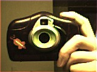

The cameras use a 56K 8/N/1 serial protocol, and thus can be adapted for use with most any computer. The command protocols are detailed here and are easy to use. Note that the camera has little native intelligence, running from a variant of the Intel 8051. As a consequence, the image data from the camera is almost completely raw, requiring the host PC to demosaic the Bayer RGB data. While fundamentally simple, this process can be done in many ways. Here are just a few links to more information on this:
Fill Factory's generalized algorithm
You might also find Charles Poynton's Color FAQ useful if you _really_ want to learn about video and color.
I've written several simple applications for downloading and processing the data from the Mattel cameras. Although a work in progress, these are functional and can serve as a starting point for any further development. Currently, they support several different demosaic algorithms, JPEG, BMP and PPM file formats and other useful options.
mattel_cam.tar.gz The original version.
mattel_cam-0.3.1.tar.gz New, improved with additional options and bugfixes. Minor tweaks for latest GCC syntax.
Here's a self portrait of the camera, saved with JPEG quality of 90.

Here's one of my helpers...
Please let me know if you find this code useful, or if you have any suggestions or revisions to the code.
I've used this code to set up a simple webcam with realtime updates, history and automated time-lapse movie generation. If you're interested in this, here is a tarball of the scripts I use to run it. Sorry, the webcam is behind a firewall and thus inaccessible, but here's an example of the time lapse movies: 15 min full day.
Some other folks have also gotten some code for the Mattel Cameras going. Pete Zaitcev has a small app available at his site, and the gphoto development team has a driver in their development version.
Although I don't program in Windows and cannot help you with your Windows system, the source code for my Mattel camera driver could be used by someone with experience in programming Windows applications to create an adequate driver for the Mattel camera in almost any OS, including Windows XP. Perhaps you know someone who could do this? If so, I'd be happy to help.